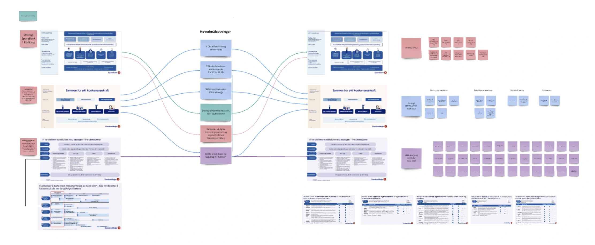
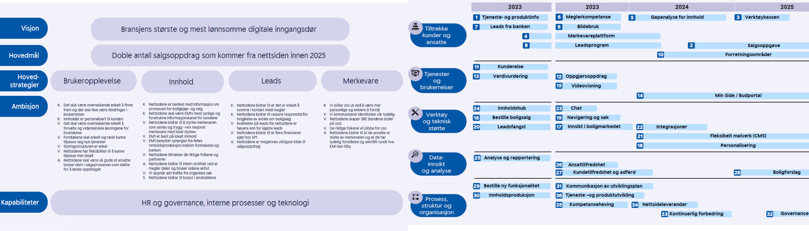
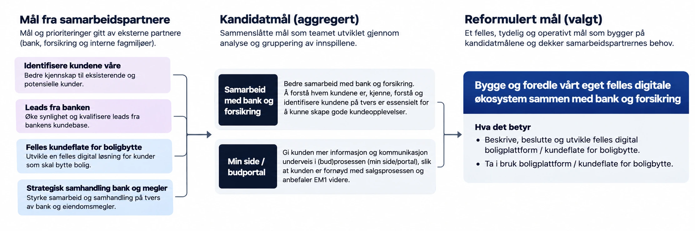
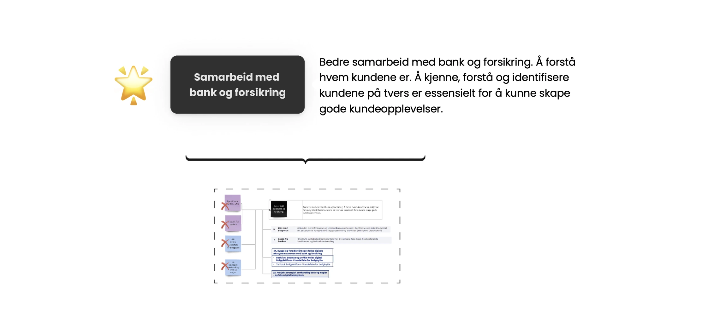
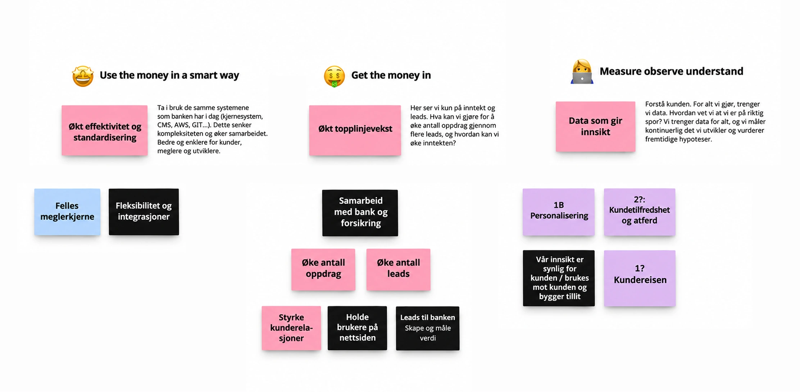

EiendomsMegler 1 · Product strategy
Creating a shared direction for product teams
At EiendomsMegler 1, I worked with product teams in Oslo and Trondheim to establish a clearer direction for their work.

Both teams received requests from different parts of the organisation, including brokers, bank representatives and the steering group. The backlog kept growing, but there was no shared understanding of which objectives mattered most or how to choose between competing requests.
As a result, proposed features were increasingly being treated as goals.
Too many goals, too little direction
EiendomsMegler 1 had accumulated objectives from several parts of the organisation.
Some overlapped. Others described specific solutions rather than the outcomes they were meant to achieve. Several depended on decisions or activities outside the product teams' control.

This made prioritisation difficult. When a new request arrived, the teams lacked a consistent way to assess its importance or explain why something else should take priority.
Examining the goals together
I worked with the teams and stakeholders to map the existing goals and understand how they related to one another.
We examined what each team could influence, which objectives depended on others and what fell within their mandate.

Through workshops, we sorted the goals into those worth keeping, those that needed reformulation and those that should be removed.
This exposed overlapping ambitions and helped separate genuine objectives from proposed features.
Making the goals useful
We then worked on making the remaining goals clearer.
A useful product goal needed to describe an outcome, not prescribe a solution. It also needed to be relevant to the team's responsibilities and provide a basis for evaluating progress.
By reformulating and combining goals, we created a more coherent direction that connected customer value with the organisation's ambitions.

Establishing a shared North Star
The clarified goals gave the teams and steering group a common reference point for product decisions.
When new ideas appeared, they could be assessed against the agreed direction instead of entering the backlog simply because someone had requested them.
This helped the teams challenge proposals constructively. A request could be valuable without necessarily being the right priority.
The distinction also made decisions easier to explain to stakeholders.

What changed
The work gave the product teams a shared basis for prioritisation and a clearer understanding of what was within their mandate.
The steering group and teams could discuss requests using the same objectives, making it easier to explain why some initiatives should move forward and others should not.
For the teams in Oslo and Trondheim, that shared direction provided a stronger foundation for making their own decisions.
The outcome was a practical product strategy that could guide everyday prioritisation, rather than another set of goals disconnected from the work.